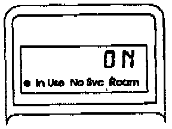
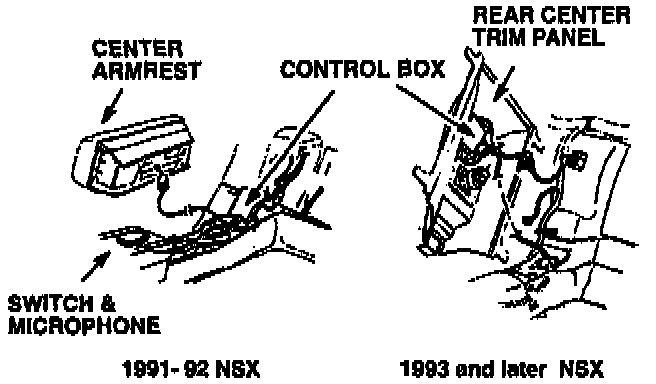
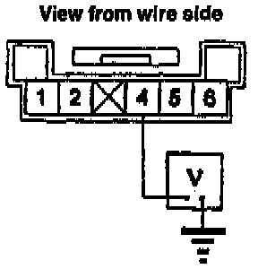
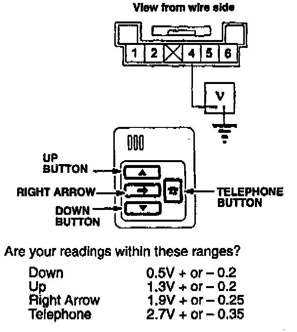
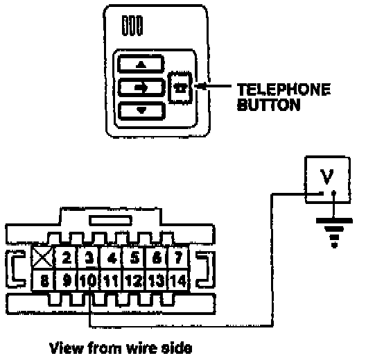
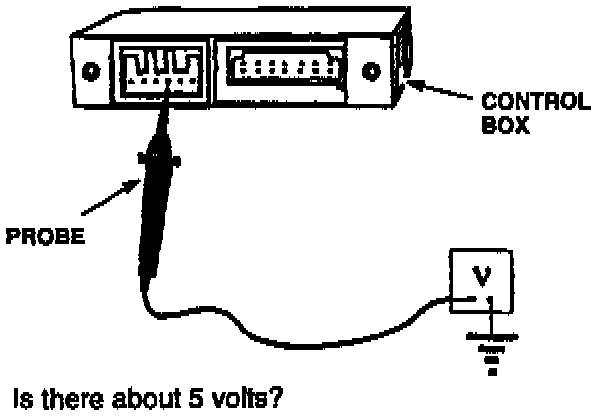
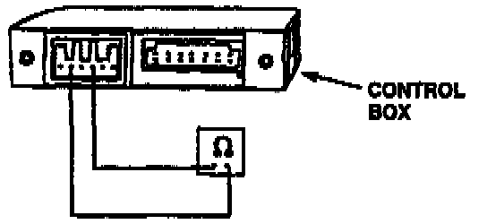
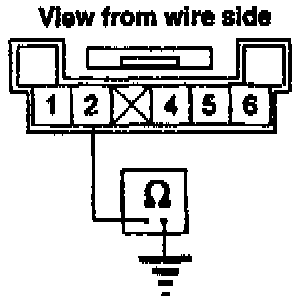
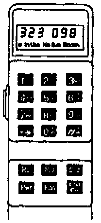
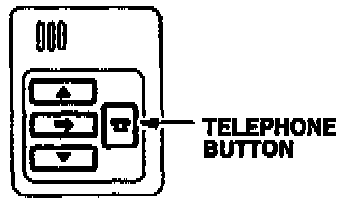

Switch Module Is Inoperative
1. Before you begin, run the Components Check described in this bulletin and verify the problem.
2. Turn the ignition switch to I (Accessory). Then, turn the phone on and verify that it's unlocked. The handset display should read ON and stay ON throughout this test.

3. Remove center armrest (1991-92 models) and rear-center trim panel (1993 and later models) to expose the 6-P connector on the control box.

4. Set your DVOM to volts. Backprobe the 6-P control box connector at terminal 4 and measure voltage to ground.
Is there about 3.9 volts?
Yes - Go to the next step.
No - Go to step 8.

5. Again measure voltage between terminal 4 and ground while pressing the Up, Down, Right Arrow, and Telephone buttons one at a time.
Yes - Go to the next step. No - Replace the switch module.[ ]
6. With the phone ON and center-rear speaker connected, press the Telephone button once.
Does the phone speak or give you a tone or a beep?
Yes - Switch module is OK. Check connections at the control box, handset, and transceiver.[ ]
No - Go to the next step.

7. Make sure the phone is still ON. Then backprobe the 14-P control box connector at terminal 10 and measure voltage to ground while you press the Telephone button once.
Does the voltage momentarily drop from about 4.5V to less than 3V each time the telephone button is pressed and released?
Yes - Go to step 12.
No - Replace the control box.[ ]
8. Disconnect the 6-P connector from the control box.

9. At the 6-P receptacle in the control box, measure the voltage between terminal 4 and ground.
Is there about 5 volts?
Yes - Go to the next step. No - Replace the control box.[ ]

10. With the DVOM set to ohms, check for continuity between terminals 2 and 4 of the 6-P receptacle.
Is there continuity between terminals 2 and 4?
Yes - Replace the switch module.[ ]
No - Go to the next step.

11. Reconnect the 6-P connector to the control box and check for continuity between terminal 2 and ground.
Is there continuity?
Yes - Replace the switch module.[ ]
No - Replace the control box.[ ]

12. Press this sequence of keys on the handset to check the electronic voice groups:
Fcn, 0, 9, 1. Clr
Fcn, 0, 9, 2, Clr

13. Then, press the Telephone button once.
Does the phone speak?
Yes - Check connections at the control box and transceiver. Make sure the handset is securely plugged into the control box.[ ]
No - Replace the control box.[ ]
The "[ ]" symbol indicates the end of troubleshooting for this symptom.